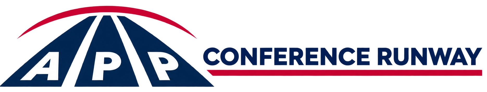

Loading meetings…

Independently curated for advanced practice providers worldwide
Missing a meeting, or need something that would help you be your best? Email .
An instrument designed to promote the exchange of ideas to improve human health outcomes and advance APP disciplines.
Search or filter global APP conferences, abstract deadlines, and student opportunities. Each record links to its source.